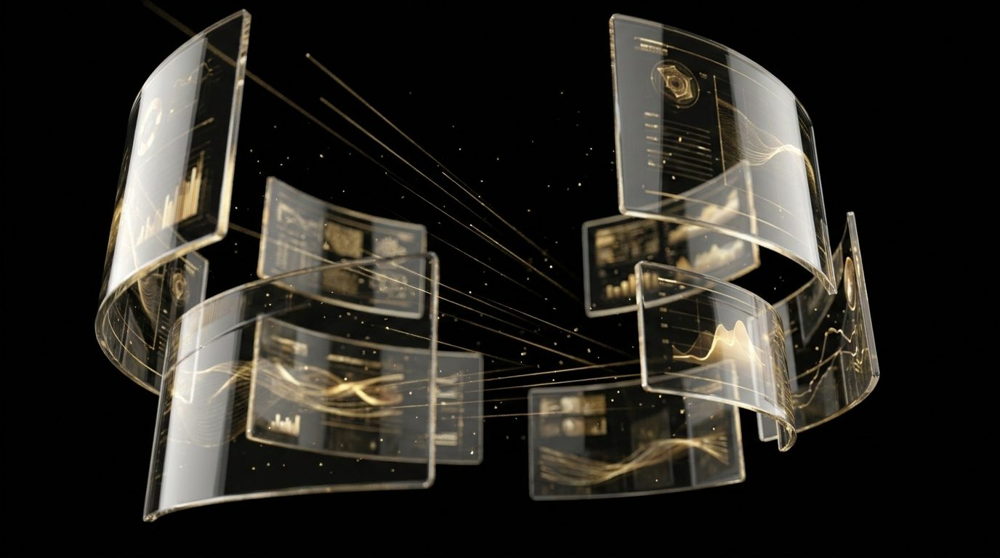
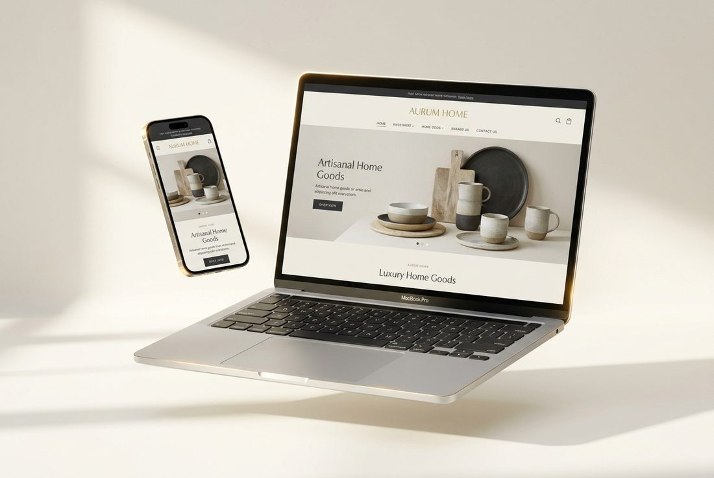
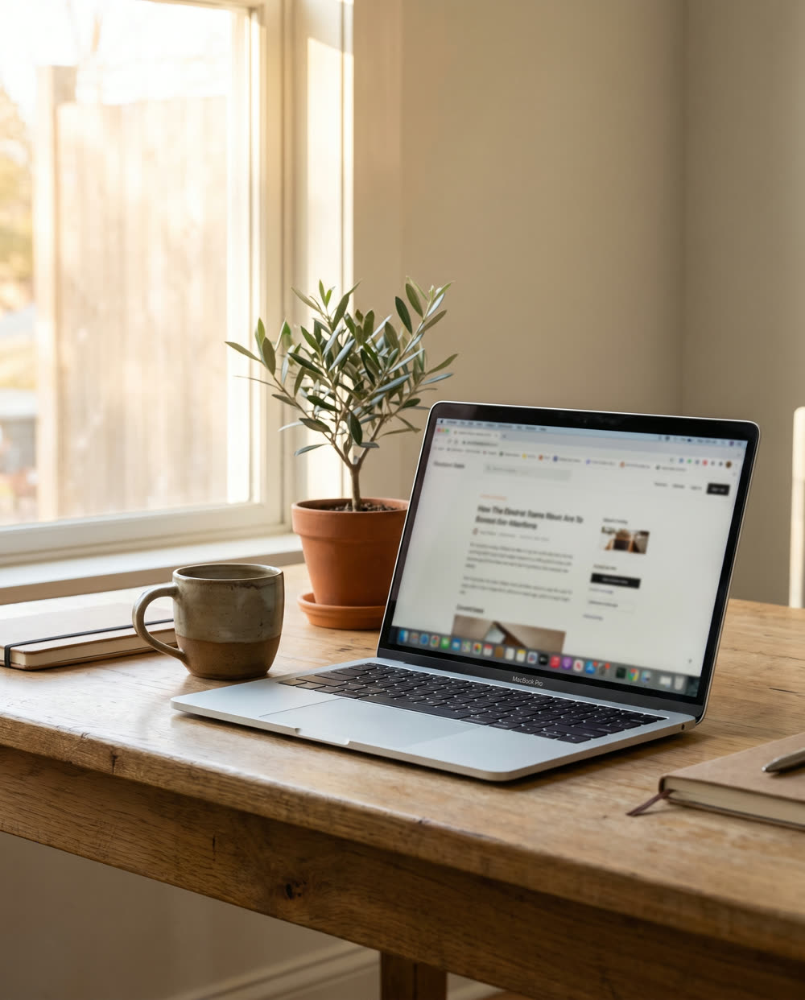
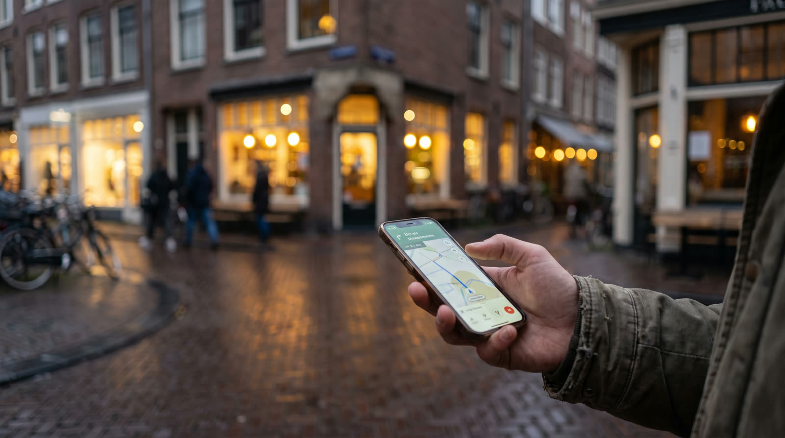

Maatwerk webdesign
Geen sjabloon van de plank. We ontwerpen en bouwen elke site op maat rond jouw merk, doelen en klanten.
Wat we leveren
Van eerste schets tot meetbare groei — wij regelen het hele traject.

Strak, modern design met een gebruikerservaring die natuurlijk naar conversie leidt.
Schone, snelle code. Vaak WordPress/Elementor of headless — wat het beste past.
Technische SEO, content en structuur zodat je hoog in Google verschijnt.
Topscores op snelheid en Core Web Vitals — beter voor bezoeker én ranking.
Verkoop online of koppel je CRM, agenda en betaalsystemen naadloos aan elkaar.
Updates, back-ups en beveiliging. Wij houden je site snel, veilig en up-to-date.

Gevonden worden
Een mooie site die niemand vindt levert niets op. Daarom zit SEO bij ons standaard in het fundament.
Het traject
We bepalen doelen, structuur en de klantreis. De blauwdruk van je site.
Een uniek, op merk afgestemd ontwerp dat je vooraf goedkeurt.
We bouwen, vullen en optimaliseren — pixelperfect en supersnel.
Live, gemeten en doorlopend verbeterd voor maximale resultaten.
Veelgestelde vragen
Dat hangt af van omvang en wensen. Een multipage website bouwen we vanaf €499, een 3D cinematic website vanaf €749. Na een kort gesprek geven we een heldere offerte op maat. Bekijk ook onze pricing.
Gemiddeld 4 tot 8 weken, afhankelijk van de complexiteit en hoe snel we content en feedback ontvangen.
Zeker. We bouwen in een gebruiksvriendelijk CMS en geven je uitleg, zodat je teksten en beelden eenvoudig zelf aanpast.
Ja. Met een onderhoudsabonnement houden we je site veilig, snel en up-to-date, inclusief back-ups en updates.
Vraag vrijblijvend een offerte aan — je hoort binnen één werkdag van ons.